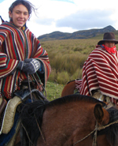

University Expeditions to Ecuador
Chacay extends an invitation to design your onsite program in Ecuador. We will provide you with access to university faculty and other renowned content experts who will help you create an extraordinary case study in your area of focus. Subjects include business administration, social entrepreneurship, social work, public health, medicine, biology, ecology, volcanology, anthropology and Latin American history. Each area will include complementary site visits.
Sample University Program Itinerary
Day 1: Arrival in Quito, airport welcome, and transfer to your boutique hotel.
Day 2: Orientation, visit to Universidad San Francisco, introduction to area experts. Afternoon and evening in old colonial Quito.
Day 3: Morning classes and Spanish instruction, afternoon excursion to the Middle of the World and the Pacific Cloud Forest.
Day 4: Morning classes and Spanish language instruction, afternoon spent ziplining, hiking, tubing and biking, with a visit to the butterfly farm.
Day 5: Morning classes and Spanish language instruction. Return to Quito for afternoon teleférico trip to 2800 meters and hike up to Rucu Pichincha.
Day 6: Morning classes and Spanish language instruction. Afternoon trip to Baños, with visit to Quilotoa Crater.
Day 7: Morning classes and Spanish language instruction. Biking, canyoning, bungee jumping, rafting, zipline.
Day 8: Morning classes and Spanish language instruction. Afternoon return to Quito via Cotopaxi, climb to refuge.
Day 9: Morning classes and Spanish language instruction. Trip to Papallacta Hot Springs in the paramo of the mighty Antisana volcano. Return to Quito for Chiva bus ride through the city, farewell party.
Day 10: Drop off at the airport, return trip home
Programs starting at: $900